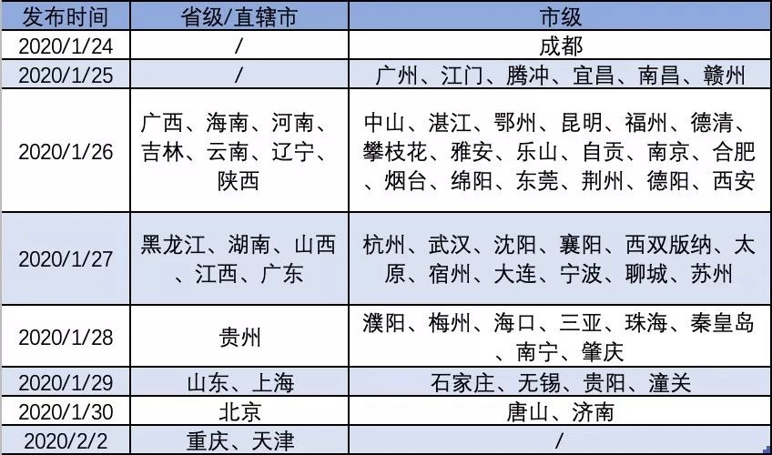

戴着口罩，我卖了两天圣女果
原文链接 备份链接 “ - 疫 情 之 下 - 其实我内心很挣扎，有钱不挣这是傻子行径。但我明白这是非常时期，作为普通人，我们既然帮不上忙，那就选择不添乱吧！ ” 1 1月24日是大年三十，终于靠到了年根儿，孩子们的作业也已经完成了大半， …

未来楼市调控松绑预期渐浓。
记者 | 王晓珊 编辑 | 盛倩玉 小豆
“销售旺季的时候，每个人每个月也就是接待20-30批次的客户，一场直播下来，可以加到40批的客户，相当于一个半月的客户量，线上直播还是有效果。”一位龙头房企的销售员工说，自己的第一场直播，就获得了10万左右的播放量。
由于受到疫情影响，很多地方的房地产开发企业响应政府号召，售楼处关闭，工地停工。短期看，疫情给房企带来的影响无可避免，但房企们也开始积极反思自身的投资及营销策略。

多地房企暂停售楼处销售
1月26日，为有效预防新冠肺炎疫情蔓延，中国房地产业协会发布倡议书指出，房地产开发企业应暂时停止售楼处销售活动，待疫情过后再行恢复。随后，各城市纷纷跟进出台相关政策通知。
据克而瑞研究中心（CRIC）不完全统计统计，截止目前，已有包含湖南、江西、广东、海南、黑龙江以及武汉、成都、重庆、福州、南京、苏州、杭州、合肥在内至少60余个省市下发通知，明确要求暂停售楼处销售活动。
“由于疫情原因，售楼部关门不接待客户，关闭时间将近有大半个月了。”一名龙头房企的营销人员告诉南都周刊记者，目前仍未有明确的开放期间，“在这期间，有很多客户想来项目看房，但是由于疫情原因，都暂不接待客户。”
发布售楼处暂停营业通告的省市

（图片来源：诸葛找房）
售楼处销售活动“停摆”，导致多地面临无房可供现象。CRIC监测到94个典型城市自1月20日以来，供应面积便呈现出稳步下行趋势，且周度同环比降幅均有不断扩大趋势，节后一周，各城基本为零供应。
与此同时，楼市热度在春节假期也骤然降温。CRIC在另一份关于春节楼市的报告指出，与去年春节假期相比，2020年春节假期供应尚能与2019年基本持平，可春节后一周（初七-十三）随着疫情形势逐步严峻，84城供应量由假期时的25万平方米降至4万平方米。
新房成交下跌，融资规模下降
销售渠道受阻，疫情防控措施不断加强，居民关注焦点多集中于疫情发展和如何抗疫，新房成交量出现下降。
CRIC监测的楼市成交量显示，春节期间（除夕到初六），88个重点城市成交量仅为37万平方米。疫情爆发后，房企更像重新走入冬季，88个重点城市春节假期成交量环比前一周出现下跌，降幅达93%，与2019年春节假期相比，88个城市新房成交面积减少30%，相比2018年春节假期下跌63%。
疫情爆发后，房企春节以来融资规模下降。CRIC表示，一方面受春节法定假期延长的影响，另一方面出行及活动管控等导致大部分融资机构路演停摆，监管层在融资审批方面进度放缓叠加等原因，房企发债大幅减少。
据CRIC不完全统计，从2020年1月25日到2月10日，95家典型房企春节后完成发债融资的仅有4笔，分别为建业地产、新城控股、佳源国际及容盛发展发行的境外有限票据，涉及金额不足百亿元人民币，与2019年春节相对应的时间段相比，减少86%。

房地产是资金密集型行业，疫情影响融资减少持续对房企造成压力。
诸葛找房提供给南都周刊记者的一份报告中显示，房企一季度销售预期较差，房企拿地积极性下降；其次，由于房地产建筑施工高度依赖外来务工人员，加之疫情导致全国范围内短期开工不足，拉长上市供应的节奏，对房企资金链来说是一个很大的挑战。
“从销售方面来看，目前多家售楼处关闭，对房企最直接的影响就是销售额明显下滑。”报告中分析指出，“房企一方面面临着还债压力，另一方面受疫情影响销售回款也有所延后。这对于一些资金紧张的中小房企，无疑是加大压力。施工暂停、营销暂停，影响后续推盘节奏，也会影响房企的“高周转”模式。”
在融资受阻，销售停滞，开工延迟多种原因叠加下，企业可能将面临债务违约。据CRIC统计，2020年截止2月10日，共有69家房企破产，其中2月上旬就有20家。
疫情对房企的影响

（图片来源：诸葛找房）
需求犹在，疫情过后或将迎“小高潮”
但当前情况并不意味着刚需的消失，客户购房需求犹在。以广州为例，广州中原研究发展部指出，不少刚需客户担心业主趁着小阳春的节点上调楼价，因此抢先在春节回乡前把握“上市”时机，周度成交维持在1100宗的相对高位水平，成交量明显优于去年春节同期（500-800宗）。
“步入春节后，1月24日-31日，广州二手中介网签总数为2宗。但疫情结束后，市场或将迎来‘小高潮’。”广州中原研究发展部预测。
“本次疫情对于购房需求没有太大影响，购房需求并不会减少，”诸葛找房在报告中提到，随着需求的集中释放，对于开发商来说是一个机会。而且，随着当前改善类需求迅速增加，加之疫情期间的需求的延期释放，改善性市场迎来发展机会。
线下不行转战“线上”
疫情之下，不能眼看着线下运行受到冲击，很多房企“坐不住”了。世茂、绿地、保利等房企通过房天下、新浪乐居等平台开启了线上看房；一些房企通过小程序、微信公众号的方式开启网上营销模式，例如万科的万科在线家小程序、金地的金地好房小程序等；各大房地产平台也利用VR等技术搭建起线上展示的新模式。
“线上直播看房刚开始启动，效果仍待观察。”一龙头房企营销人员称，通过线上直播卖出房子的都是以前的老客户，新客户更多是在观望中。“毕竟疫情仍未结束，征信查询、银行的贷款面签问题等仍待解决，对市场行情的不看好，也是新客户观望的重要原因。”
另一家国内Top20的房企销售人员告诉南都周刊记者，不看好线上直播，直言体验感很差：“看直播的都是小鲜肉，直播受众与购房受众不是一个层次的。”他认为，网络购物在淘宝推出直播带货之前就遇到瓶颈期，很多消费在网上并没有很好的消费体验。“房产还是着重落地，强调物联、实体、可感，而且直播还很容易把楼盘的问题给传播出去。”
此外，诸葛找房近期发布的研究报告中同样提到，目前线上售房只是一个在线看房的平台，供购房者和需求方在线浏览，并不能主动获客及筛选客户，很难促成客户成交。疫情下线上售房会维持购房者对房企和购房的好感及意识，但并不会对整体的销售有较大改善。
线上销售虽无法完全替代线下销售，但仍有房企销售员工认为好的效果会在未来显现。
“销售旺季的时候，平时每个人每个月也就是接待20-30批次的客户，一场直播下来，可以加到40批的客户，相当于一个半月的客户量，线上直播还是有效果。”一龙头房企销售员工告诉记者，“目前客户对于直播看房接纳度挺高，一方面也是因为在家没事干，可以参与到直播的新事物中，另一方面，由于直播形式和内容的新颖，可以在直播当中给大家带来一些福利和笑容。”
他表示，自己的第一场直播，最后的统计数据显示有10万左右的播放量，在市场中还是很可观的。
采取线上看房的房企及推广方式

（数据来源：诸葛找房整理）
在房企遭遇资金流压力的时候，中国恒大已经走出延迟开工的一步。据该公司2月1日下发的通知显示：全国1246个在建项目，在2月20日前不得开工，具体开工时间将根据疫情另行通知。
疫情或给房企提供一个调整发展规划的机会。诸葛找房认为，当前房企要谨慎拿地，未来在产品做精做细方面多下功夫，“面对疫情，房企的现金流受到严重考验，因此房企务必要把握机会，拓宽融资渠道，加强融资，保证现金流安全。”
疫情下，未来楼市调控松绑预期渐浓。银河证券发布于2月11日的研报称：近期的央行投放1.2万亿流动性、LPR降息和因城施策的密集实施，释放出政策托底和改善的信息，后续政策的弹性有望扩大。
来源｜南都周刊
END
欢迎分享到朋友圈，如想取得授权请邮件：newmedia@nbweekly.com。如果想找到小南，可以在后台回复「小南」试试看哦~

原文链接 备份链接 “ - 疫 情 之 下 - 其实我内心很挣扎，有钱不挣这是傻子行径。但我明白这是非常时期，作为普通人，我们既然帮不上忙，那就选择不添乱吧！ ” 1 1月24日是大年三十，终于靠到了年根儿，孩子们的作业也已经完成了大半， …
原文链接 备份链接 经济观察网 记者 李静 实习记者 刘兰 受到疫情影响，近期多地学校采用“线上授课”的方式响应教育部疫情期间学校“停课不停学”行动。这一行动，牵扯众多，也包括正在复习冲刺阶段的高三备考生们。 疫情对于教学工作、班级管理影 …
原文链接 备份链接 11.02.2020本文字数：4000，阅读时长大约8分钟 导读：企业虽然很艰难，但目前要做的就是配合执行国家的各项要求，早日战胜疫情，企业能早日找到出路。 作者 | 第一财经 张苑柯 元宵节刚过，疫情之下第一批复工 …
原文链接 备份链接 房企高管们普遍认为，调整税收与限购政策，是对自己立竿见影的帮助 文 | 《财经》记者 王博 实习生 郭明骏 编辑 | 马克 2月9日，部分头部房企再次宣布延长复工时间，截至发稿前，正荣、融创、龙湖、滨江等房企将复工时 …
原文链接 备份链接 文/何星莹 编辑/单一 疫情吸引了绝大部分视线，但在公众关注之外，余波还在继续。 受疫情影响，消费者纷纷取消春节期间的出行和聚餐计划，旅游业和餐饮业首当其冲，不少从业者苦中作乐调侃自己“暂时被官宣失业”。 年前囤积的物 …